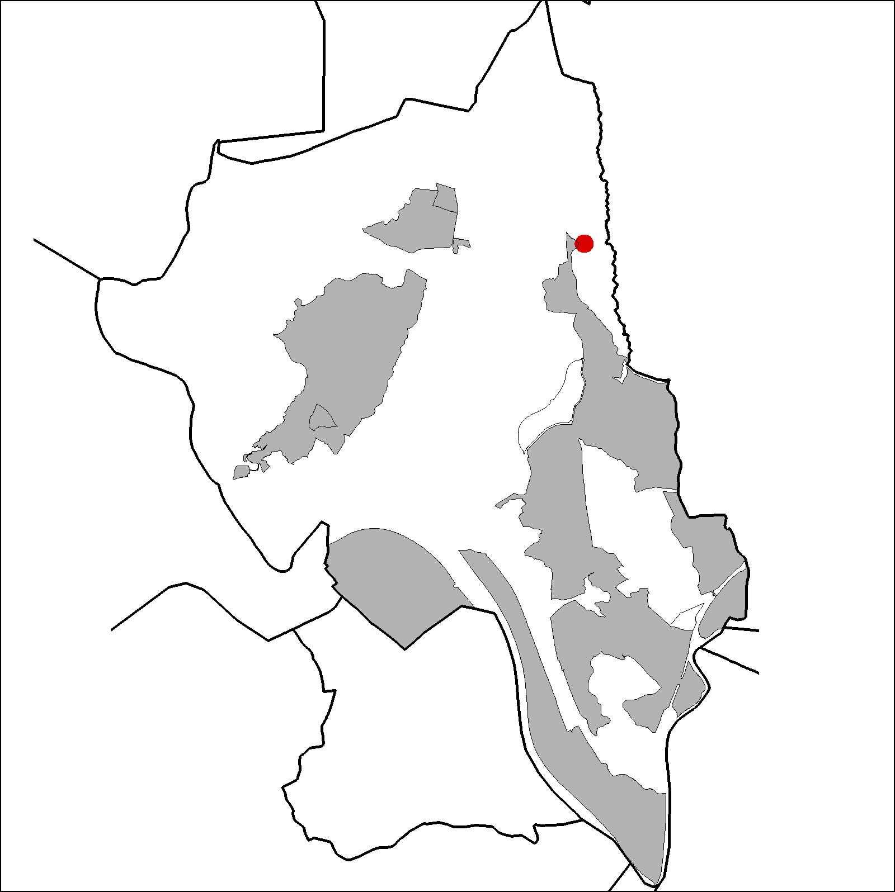
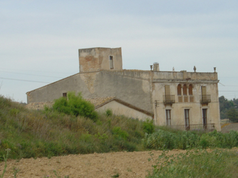

|  |  |
Nom de l’element: Ca n’Elies
Clau d’identificació: B.1.07
Nucli o indret: Entre la carretera B-151 i el torrent de Can Canyadell.
Referència cadastral: Polígon 3, parcel·la 9503 (08053A00309503)
UTM:X= 415.300, Y= 4.594.903, 183,50 m s.n.m..
Règim del sòl: Sòl no urbanitzable.
1.1. Època de construcció i tipologia:
Masia catalana d’estructura compositiva simple de planta rectangular, amb planta baixa i pis, de finals del segle XVIII (1795 aproximadament). La coberta és a dues aigües, de teula i posta. Els murs són de mamposteria i conglomerat de pedres i fang. La façana, amb un balcó corredís, sembla una construcció de la meitat del segle XIX. El portal d’entrada és de punt rodó adovellat. Una de les finestres de la façana principal està emmarcada amb brancals de pedra decorats amb petites escultures i caps humans que recorden el gòtic. Existeix una edificació construïda el 1867 de secció quadrada de planta baixa i dues plantes pis, de façana simètrica amb una arcada central i decoracions neoclàssiques a la façana. Al 1867 es va construir l’edifici annex a la masia. Al 1970 es va construir el sector de la granja. En el recinte interior a la zona d’accés existeixen unes columnes singulars. A finals del s.XIX es va crear la Societat Proveïdora d’Aigües de Ca n’Elies.
1.2. Estat de conservació:
En general, és mitjà. Els forjats, les voltes, la façana, el paviment, les obertures i els acabats interiors es troben en un estat de conservació mitjà. Les estructures portants i la coberta es troben en bon estat. No presenta humitats.
1.3. Ús actual:
Habitatge i agrícola.
1.4. Accés:
Accés fàcil per camí de terra que neix des de la carretera B-151.
Masia catalana del segle XVIII.
3.1. Usos admesos:
Habitatge rural (màxim 3 habitatges); residencial; hoteler (excepte aparthotel; i amb un màxim de 30 places); oficines i serveis; indústria vinculada a productes del camp (industrial, categoria 1ª); educatiu; recreatiu cultural i social; recreatiu de restauració; esportiu.
3.2. Condicions d’ordenació:
Segons Pla Especial a redactar.
3.3. Accés i serveis:
Camí de terra que neix des de la carretera B-151.
BCIL (Bé Cultural d’Interes Local)